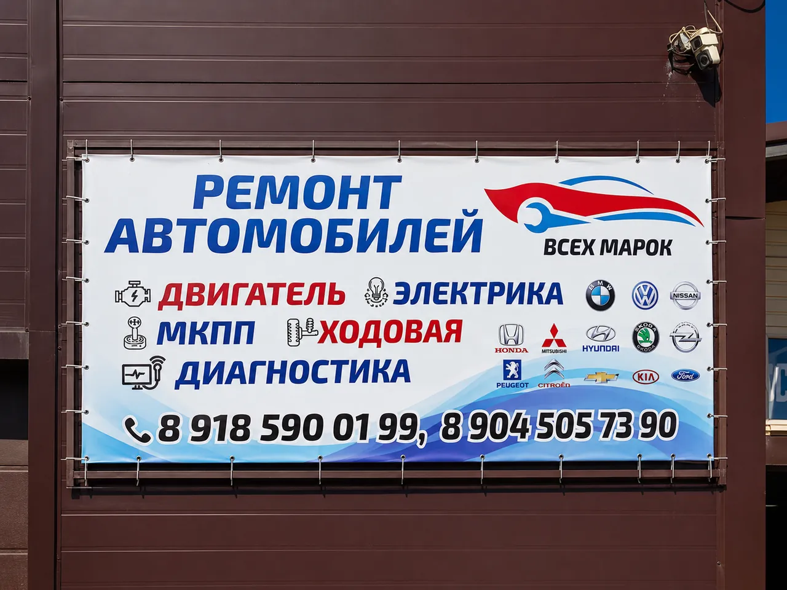

Диагностика
Комплексная проверка
Ошибки, нестабильная работа, шумы и симптомы без очевидной причины.
Открыть страницуВыберите направление или начните с симптома. Каталог не подменяет диагностику: он помогает понять, какие сведения подготовить и как будет построена проверка.
Каталог направлений
Каждая страница объясняет симптомы, возможные причины, состав работ, данные для предварительной оценки и связанные направления.
Ошибки, нестабильная работа, шумы и симптомы без очевидной причины.
Открыть страницу
Масло, фильтры, жидкости и контроль состояния по автомобилю и пробегу.
Открыть страницу
Стуки, люфты, увод, гул и изменение поведения автомобиля.
Открыть страницу
Снижение эффективности, вибрация, шум, изменение педали или увод.
Открыть страницу
Неровная работа, потеря тяги, расход жидкостей, перегрев и шумы.
Открыть страницу
Запуск, зарядка, освещение, проводка, датчики и электронные ошибки.
Открыть страницу
Сцепление, привод, шумы и затруднённое переключение передач.
Открыть страницу
Слабое охлаждение, запах, шум или нестабильная работа климатической системы.
Открыть страницу

Исходные данные, совместимость и согласование варианта детали до заказа.
Открыть страницуВход по симптому
Начните с диагностики, а не с замены узла по коду ошибки.
Проверка питания, запуска, топлива и условий появления неисправности.
Важны скорость, режим движения, нагрузка и место, откуда слышен звук.
Лучше прекратить движение, если продолжение может повредить автомобиль.

Марки на вывеске сервиса
В материалах VN-MASTERS подтверждены BMW, Volkswagen, Nissan, Honda, Mitsubishi, Hyundai, Škoda, Opel, Peugeot, Citroën, Chevrolet, Kia и Ford. Перед записью назовите марку, модель, год, двигатель и VIN — так сервис сможет проверить применимость конкретной работы и детали.
Утверждение «все марки без ограничений» требует отдельного подтверждения, поэтому на сайте используется фактический список с наружной вывески.
Уточнить по автомобилюПеред записью
Выберите «Не знаю — нужна консультация» в форме и подробно опишите симптом. Неисправность нельзя достоверно определить по одному сообщению, но описание поможет подготовить визит.
Да, обращение может начинаться с проверки. Дальнейшие работы обсуждаются после того, как понятна причина и состав задачи.
Эти направления встречались в старой версии, но не подтверждены текущими материалами сервиса. До уточнения собственником они не включены в каталог.
Сервис уточнит детали, предложит направление проверки и подтвердит время визита.